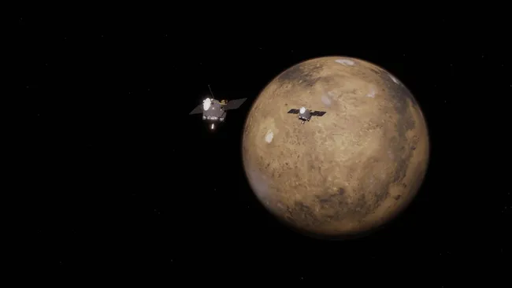

NASA's new Mars mission: These twin satellites could reveal how the Red Planet lost its atmosphere
When you purchase through links on our site, we may earn an affiliate commission. Here`s how it works.
Mars Set to Receive Dual Attention
Mars is about to receive a double dose of attention. This weekend, a pair of identical NASA satellites will launch together to help reveal how the Red Planet lost its thick atmosphere and liquid water — one of its oldest mysteries, and a key to understanding how it transformed from a once-habitable world into the frozen desert it is today.
Launch Details and Mission Purpose
Scheduled for liftoff no earlier than Sunday (Nov. 9) aboard Blue Origin's New Glenn rocket from Cape Canaveral, Florida, the $80 million ESCAPADE mission — short for Escape and Plasma Acceleration and Dynamics Explorers — will send two twin probes, nicknamed Blue and Gold, to orbit Mars in tandem. The mission marks NASA's first dual-satellite mission to another planet, and aims to create a 3D view of how the solar wind, the stream of charged particles from the sun, energizes and strips away Martian air.
"To understand how the solar wind drives different kinds of atmospheric escape is a key piece of the puzzle of the climate evolution of Mars," Robert Lillis, principal investigator for ESCAPADE and associate director for planetary science at the University of California, Berkeley's Space Sciences Laboratory, said in a statement released Wednesday (Nov. 5). "ESCAPADE gives us what you might call a stereo perspective — two different vantage points simultaneously."
Geologic evidence from ancient river valleys and water-formed minerals shows that Mars once had liquid water, which means it also had a much thicker atmosphere. But around 4 billion years ago, the planet's magnetic field, which is the invisible shield that protects a world from the sun's radiation, began to fade. Without that protection, the solar wind slowly stripped away the Martian atmosphere, leaving behind a tenuous wisp less than 1% as dense as Earth's.